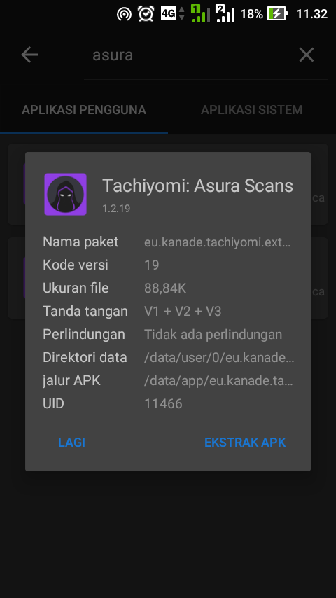
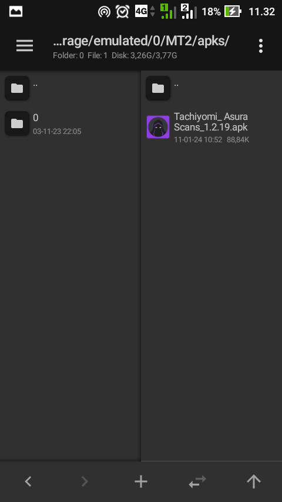

Edit Ekstensi Tachiyomi (Ganti Domain)
cara editnya gak sulit, pertama siapkan Aplikasi MT Manager, download di SINI2. Ekstensi mentah yang blom diinstal, untuk mendapatkannya, buka apk MT Manager lalu klik garis tiga pojok kiri atas atau slide dari kiri ke kanan sama aja, lalu pilih Ekstrak APK cari ekstensi yang mau di eksekusi lalu klik ekstensi nya dan pilih EKSTRAK APK sebagai contoh ekstensi asura

jika sudah, klik MENEMUKAN dan akan di arahkan ke folder dimana apk di ekstrak
Masuk ke tutorial
1. langsung eksekusi

2. klik exstensinya dan klik Lihat, akan tampil seperti gambar dibawah dan Pilih file Classes.dex
3. Pilih Editor Dex yang normor 2

4. Jika tampilan berubah seperti dibahawah pilih Kolam tali gw gak tau kenapa namanya Kolam Tali, tapi ya... masa bodo :v

5. Akan tampil seperti gambar dibawah setelah klik Kolam tali, ada titik tiga dipojok kanan atas, klik dan pilih Saring
6. Cari kata Asura atau boleh juga masukin kata http, intinya kita mau nyari domain Asura dan menggantinya
7. lihat gambar dibawah, ketemu 2 domain asura, yang mana ya?...... iya, yg asura.gg yang mau kita ubah, asura yg satunya biarin aja, itu asura khusus Turki kayaknya, yg kita mau ubah ini asura yang inggris
8. Disini gw mau ubah dari Asura ke cosmicscans inggris, jadi domainya kita ganti seperti gambar dibawah
9. Kalau udah di ganti klik lagi titik tiga pojok kanan atas, dan pilih Menyimpan
10. Setelah Menyimpan klik terus tombol kembali dihape kalian, tombol Kembali tau lah ya :v
11. Akan ada notif seperti gambar dibawah, klik OKE,
tapi sebelum klik OKE pastikan kalian udah centang kolom
TANDA OTOMATIS seperti di gambar, kalo ada notif lagi klik aja Tutup
12. Tampilannya seperti dibawah, NAH... dah jadi nih, klik lagi Kembali
13. Klik lagi exstensinya dan dan exstensi pun siap diinstall
14. NOTE: ekstensi yang udah jadi tinggal install, tapi kalo gak bisa diinstall, kemungkinan kalian masang exstensi asura sebelumnya, hapus dulu yang udah diinstal, karna exstensi yang baru kita edit gak bisa ditimpa dengan yang resmi, hapus aja dulu, tapi sebelum menghapusnya ada baiknya kalian back up komik dari asura, ya buat jaga2 aja sapa tau ilang juga komik di pustaka, atau kalian donlod tachiyomi yg lain aja, biar make dua Tachiyomi, misal TachiyomiJ2K, TachiyomiAZ atau TachiyomiSY, kalau gak mau donlod yg lain back up aja pustaka kalian.
Nah dah bisa nih
15. NOTE: tidak semua exstensi dapat di ubah seenak jidat, pastikan kalian liat2 dulu tampilan web mereka, kalau tampilan web mereka sama berarti bisa, yang gak bisa itu gw kasih contoh mudahnya: Asura ke Reaperscans, Asura ke Manganato, dan sebagainya yang beda tampilan, jadi cari yang sama aja.


dan klik KELUAR seperti gambar dibawah

Tahap Pengujian

gitu aja sih, seharusnya Paham.
PERINGATAN!!!!!
Jangan mencari untung dengan memendekkan URL biar cuan, apa lagi menjual dengan meminta pulsa atau semacamnya, pihak Tachiyomi ngasih kita ni app free tanpa biaya, tanpa iklan, kalau dari sana free, kita juga harus free, mohon pengertiannya
TERIMA KASIH